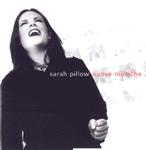

| Artist: | Sarah Pillow |
| Title: | Nuove Musiche |
| Label: | Buckyball Music BR007 |
| Length(s): | 47 minutes |
| Year(s) of release: | 2000 |
| Month of review: | [02/2003] |
| 1) | Amarilli Mia Bella | 4.32 |
| 2) | Come Away, Come Sweet Love | 4.19 |
| 3) | Exulta, Filia Sion | 6.12 |
| 4) | Il Mio Cocente Ardore | 4.07 |
| 5) | Dido's Lament, Recitative | 0.46 |
| 6) | Dido's Lament From Dido And Aeneas | 5.03 |
| 7) | Usurpator Tiranno | 6.13 |
| 8) | The Fatal Hour | 4.26 |
| 9) | Air (decid Como Peude Ser) | 4.47 |
| 10) | Orphee | 2.33 |
| 11) | Can He Excuse My Wrongs? | 4.08 |